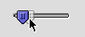
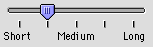
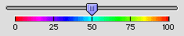

Sliders and Tick Marks
A slider control consists of a slider bar, which displays a range of allowable values, and an indicator, which marks the current setting. The user can drag the indicator to set a new value within the range.Sliders can be horizontal or vertical. The indicator can point in any direction or be nondirectional. The user drags the indicator across a horizontal slider or up and down a vertical one to alter the value of the slider. Like scroll bars, sliders drag a ghost image of the indicator along with them. The ghost indicator is a copy of the indicator which shows where the user has dragged the pointer. Figure 2-17 shows a slider with a downward pointing indicator shadowed by a ghost indicator.
Figure 2-17 A slider and ghost indicator

A slider can display tick marks to represent increments within the range of values. You determine the number of tick marks and what fraction of the scale each mark represents. If you use tick marks, they are drawn appropriately for the direction of the slider. Figure 2-18 shows a horizontal slider using vertical tick marks.
Figure 2-18 A horizontal slider with vertical tick marks

Be sure to label the tick marks so that they clearly indicate the effect of moving the indicator. While it is true that most people assume that moving an indicator up a vertical slider means increasing the value of the setting, you can easily remove all doubt with graphics or text. Figure 2-19 shows an example of a horizontal slider that uses incremental numbering to indicate increasing values as the user moves the indicator to the right.
Figure 2-19 A slider with directional information

Sliders support live feedback, a process also known as "live dragging." This allows you to design a dialog in which the user is given constant visual updates of the changes in value as the indicator is dragged, as opposed to the standard behavior of waiting to update the value until the mouse button is released.
Make sure that you don't use a scroll bar when you really should use a slider. Sliders are designed to change settings, while scroll bars are used to represent the relative position of the visible portion of a document or scrolling list. Using a scroll bar to change a setting confuses the meaning of the element and makes the interface inconsistent. For more information on using scroll bars, see "Scroll Bars" (page 37).